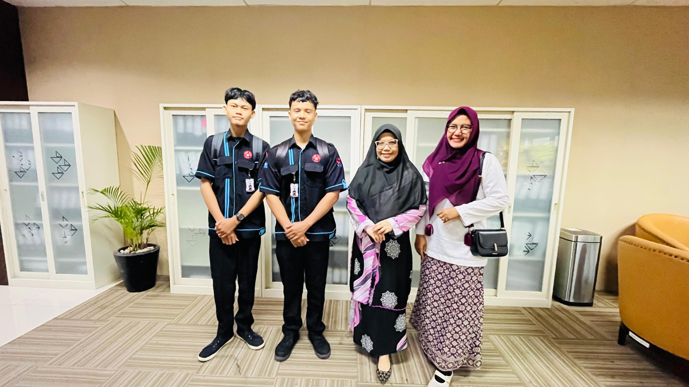

Tahap awal dimulainya kegiatan Praktik Kerja Lapangan (PKL) diawali dengan proses penyerahan secara resmi oleh guru pembimbing dari sekolah kepada pihak PT Bank Riau Kepri Syariah (Perseroda).
Pada pertemuan ini, dilakukan serah terima berkas administrasi magang dan penjelasan mengenai tata tertib umum yang berlaku di lingkungan perbankan. Hal ini bertujuan agar siswa dapat berintegrasi dengan baik serta menjaga profesionalisme selama masa magang berlangsung.